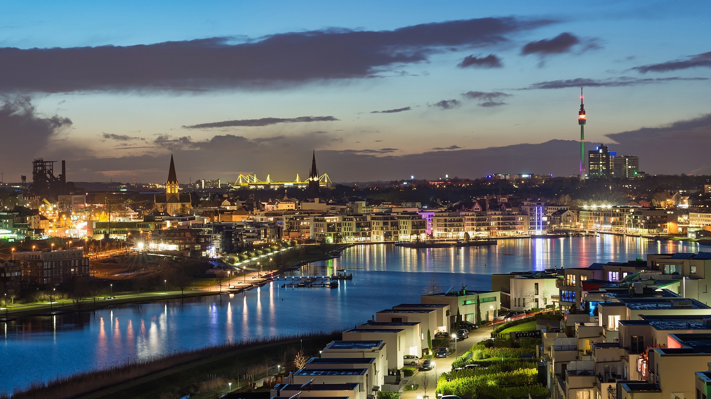

El Westfalenstadion, por razones de patrocinio llamado Signal Iduna Park, es un estadio de fútbol ubicado en la ciudad de Dortmund, en el estado federado de Renania del Norte-Westfalia, al oeste de Alemania. Es la sede habitual del Borussia Dortmund. Con sus torres de suspensión amarillas el estadio es un símbolo de la ciudad de Dortmund. Fue reconstruido para ser una de las sedes de la Copa Mundial de Fútbol de 2006 celebrada en Alemania, para este evento, el estadio llevó temporalmente el nombre de Estadio de la Copa Mundial de la FIFA de Dortmund, por razones estipuladas en el reglamento de la FIFA. El estadio es uno de los estadios de fútbol más famosos de Europa y es conocido por su gran ambiente. Tiene una capacidad de liga de 106.555 (de pie y sentado) y una capacidad internacional de 86.662 (solo sentado). Además de ser el estadio de fútbol más grande de Alemania, es el quinto estadio más grande de Europa, y el tercer hogar más grande de un club europeo de primer nivel después del Camp Nou y el Estadio Santiago Bernabéu. Tiene el récord europeo de asistencia promedio de aficionados, establecido en la temporada 2011-12 con casi 1,37 millones de espectadores en 17 partidos con un promedio de 80,588 por partido. Las ventas de abonos anuales ascendieron a 55,000 en 2015.
